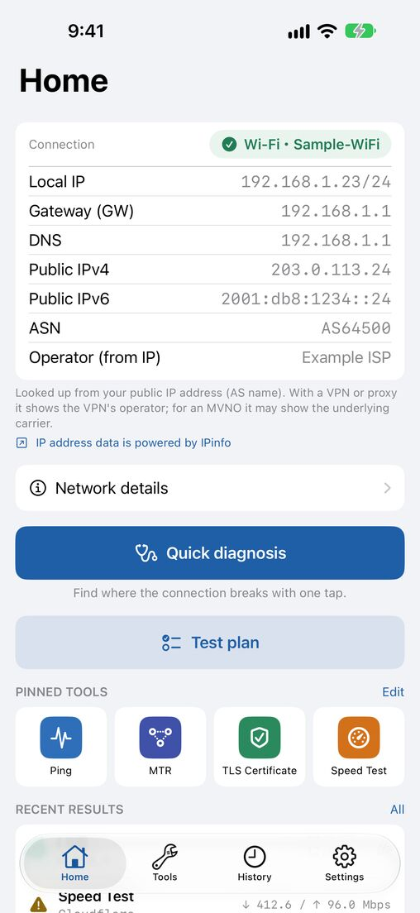
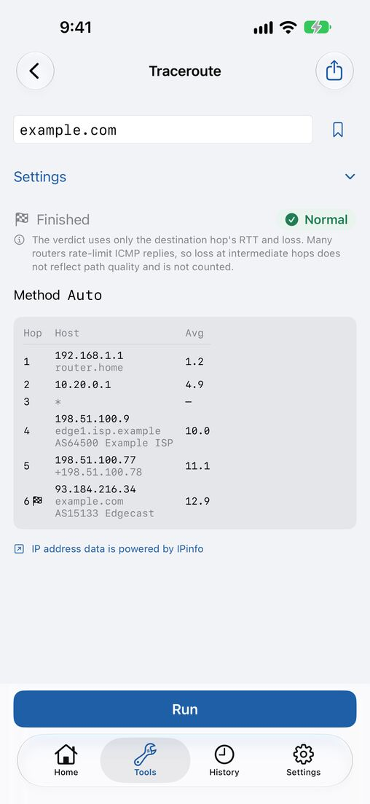
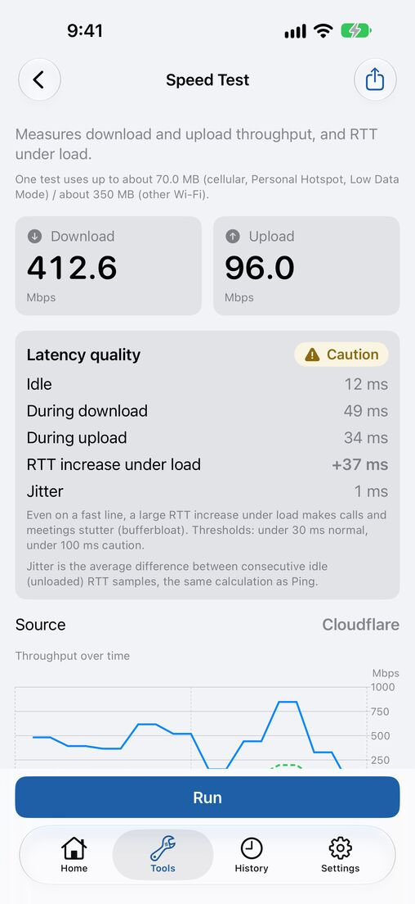
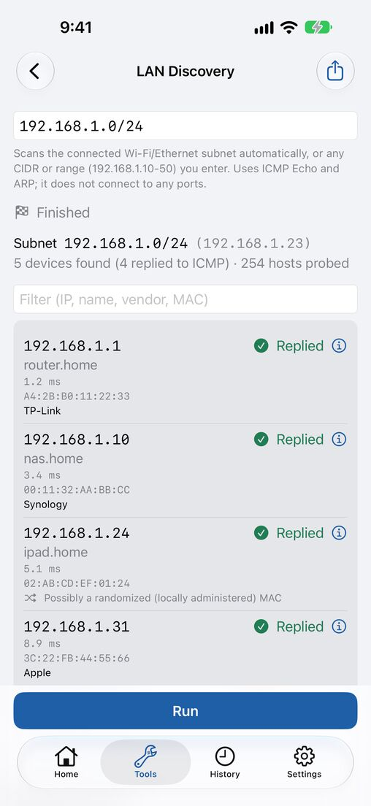

Network Field Kit
Ping, DNS, speed & LAN tools
Find out where a connection breaks down, right on site. Network Field Kit is a network diagnostics app that lets you isolate, record and report connection problems with just an iPhone or iPad. Every diagnostic tool is free and unlimited.




Features
Quick diagnosis shows where it breaks
Checks the link, gateway Ping, DNS and internet reachability in order, and sums up where the connection stops, so you know what to look at first.
The field tools you need, in one app
Ping / TCP Ping, Traceroute / MTR, Path MTU, DNS (record types, resolver comparison, DNSSEC), DoH / DoT, TLS certificate, HTTP response, WHOIS, NTP clock offset, speed test, latency quality and iperf3.
Find and inspect devices on your LAN
Discover devices on your network and list them with their manufacturer (OUI), and give them names. Port scan, subnet calculator, SNMP walk and Wi-Fi walk test are included too.
Test plans for acceptance checks
Line up Ping, DNS, speed test and other steps, run them in order and get a pass / fail summary. Export it as a PDF and hand it in as your report.
Record now, review later
Monitoring logs outages, and history and bookmarks let you rerun the same check in a tap. Diagnostic reports and Shortcuts are supported.
No server of our own
The app has no server of its own, and the developer does not collect your results. Speed tests run against Cloudflare, and you are asked for consent first.
Pricing
Every diagnostic tool is free and unlimited. The free version shows a banner ad at the bottom of the screen (hidden while a measurement is running).
The one-time “Pro” purchase adds: no ads, CSV / JSON export, PDF export, sharing and printing for reports and test plans, unlimited history with search, unlimited bookmarks and saved test plans with iCloud sync, saved device names, and Home Screen and Lock Screen widgets. See the App Store for the price.
FAQ
- Which devices are supported?
- iPhone with iOS 18 or later, and iPad with iPadOS 18 or later.
- Do I need an account?
- No. Install it and start right away. iCloud sync in Pro is optional and uses your own iCloud.
- The Wi-Fi network name (SSID) is not shown.
- iOS requires Location permission (While Using the App) to read the SSID. In Settings > Privacy & Security > Location Services, set Network Field Kit to “While Using the App”. Your location is never recorded or sent.
- Can I see this device’s MAC address or nearby access points?
- Because of iOS limits, this device’s own MAC address and nearby access points are not available. MAC addresses of other devices on the same LAN are shown from the device’s ARP information.
- Where does the speed test connect to?
- Cloudflare’s test servers. Your IP address and the test traffic reach Cloudflare, and a test uses a lot of data on a cellular connection. Before your first test, the app explains this and asks for your consent.
- How can I contact you?
- Email network-field-kit-support@mayudama.app. See also the Support page.